|
|
|
This project is all about path-tracing. We've implemented basic ray-intersection methods along with both direct and indirect illumination methods to generate realistic looking images that can mimic how light bounces. We've also found ways to optimize this process using a bounding volume hierarchy structure and adaptive sampling. The most important part of our approach for implementing each part is understanding the high-level view of what we're implementing before writing code. Taking time to conceptually understand how and why we need to implement something has saved us a lot of time during coding/debugging. Even having this in mind, we've found ourselves stuck on small errors that could've been avoided if we read the spec more thoroughly.
The generate_ray function we implemented goes through a few steps to generate a ray.
Input: normalized image coordinates (x, y)
Output: ray
hFov and vFov (Field of View) are two variables that define the sensor. We first define two new variables to help set up the new camera space coordinate system:
sensor_max_x => tan(radians(hFov) * 0.5)
sensor_max_y => tan(radians(vFov) * 0.5)
We then create new sensor coordinates which represent the (x, y) in camera space:
sensor's x value => -sensor_max_x + (x * (2 * sensor_max_x))
sensor's y value => -sensor_max_y + (y * (2 * sensor_max_y))
Using c2w (camera to world rotation matrix) and the new sensor coordinates we create a ray using its constructor. We also normalize it by using .unit(). In addition, we want to also "segment" the array by setting its min_T and max_T to nclip and fclip, respectively. This is because everything that lies outside these two clipping planes are invisible to the camera.
To determine if a ray intersects with a triangle, we first determine if it intersects with the plane that the triangle lies on.
A ray is defined by its origin and its direction vector. A plane is defined by a normal vector and some point the plane.
The ray equation: r(t) = o + td, 0 <= t <= inf
The plane equation: p: (p - p') * N = 0
(Any point in the plane minus another point in the plane will be a vector that is orthogonal to N (normal vector).)
If we substitute the ray equation into the plane equation for a point p, we can solve for the t that makes it true.
Normally, intersections with t >= 0 are valid, but we further restricted it so that t must be within min_t and max_t.
This is because only the nearest intersection is needed and intersections that are further away can be ignored.
Now if the ray does intersect with the plane, we can use barycentric coordinates to determine whether the point of intersection lies within the triangle.
We used the Möller Trumbore algorithm to optimize this.

|
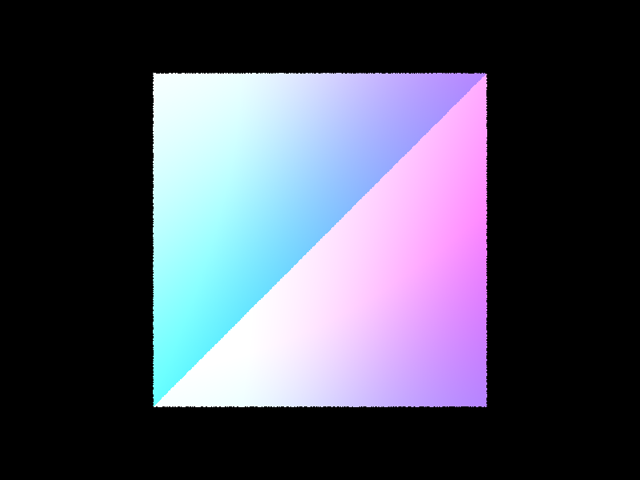
|
|
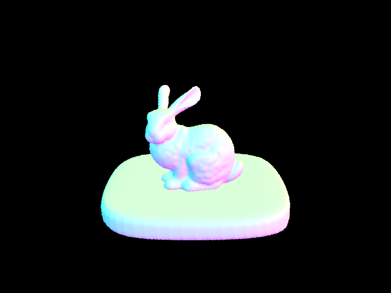
|
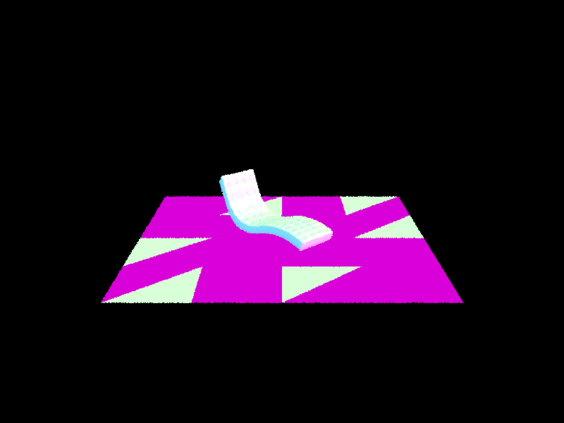
|
High-Level BVH Overview
We can optimize the search for ray-intersections to go from O(n) to O(log n) with the use of a BVH structure.
The BVH structure consists of nodes that contain a bounding box along with a left and right child.
If a ray hits a bounding box, we can recursively test its children until we reach a leaf node.
Once we reach the leaf node, we can finally test the ray against the primitives within that bounding box.
By using this structure, we are able to save a lot of time by avoiding primitives in bounding boxes that we know for sure are not going to intersect with the ray.
One tricky part about implementing the BVH structure is figuring out how to split each node into left and right children.
Although there exists many valid ways, we decided to use the average centroid of all the primitives as the split point because it is relatively easy to implement.
However, we also needed to determine which axis to split on. To do this, we used
this cost estimator
to determine the estimated cost of splitting against each axis and then chose the one with the least cost.
Bounding-Box Intersection
The way we determine whether a ray hits a bounding box is based on its intersection with axis-aligned planes. We can think of the box
as an area in 3D space that is defined by 3 slabs, one for each dimension. Each slab is composed of two planes. Here, we can use
the ray-plane intersection algorithm to determine where the ray intersects. However, since the planes are axis-aligned, we can optimize
this calculation by ignoring the normal as seen in this slide.
With two planes for each axis, we would calculate 3 pairs of tmin and tmax values. Then, we would take the min of the max values and the max of the min values.
BVH Intersection
After constructing the BVH structure and implementing the ray-box intersection method, we can finally create a method to
recursively traverse through the tree.
|
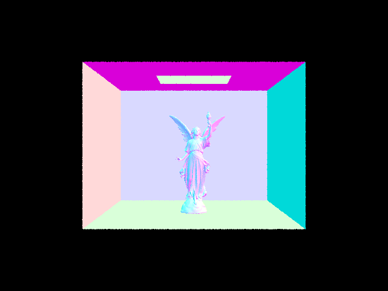
|
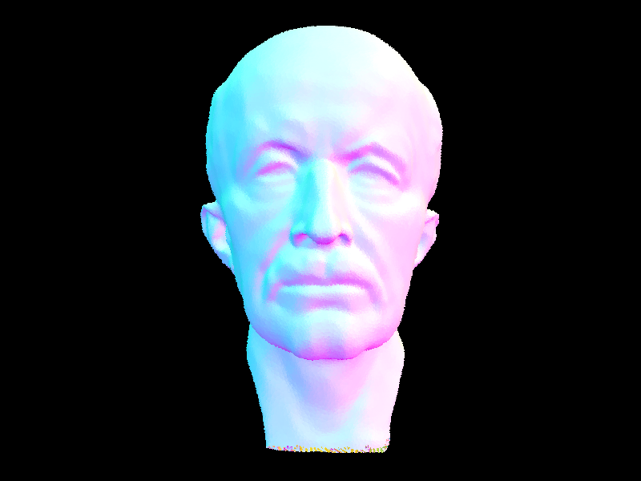
|
|
|
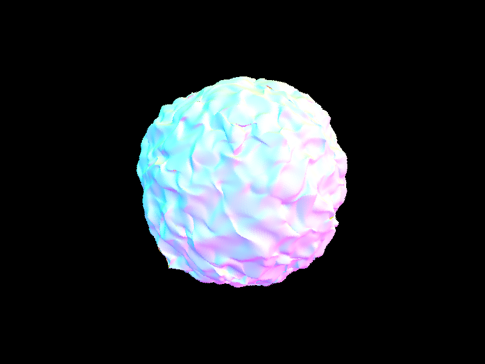
|
The bench from part 1 that took 270 seconds now renders in 0.02 seconds. Using BVH acceleration gives us a huge increase in speed. This is to be expected since without BVH acceleration, we would be checking every primitive. With BVH acceleration, we can skip over tons of primitives that we know will never intersect with the ray. Below are two other scenes that also demonstrate very fast results.
|
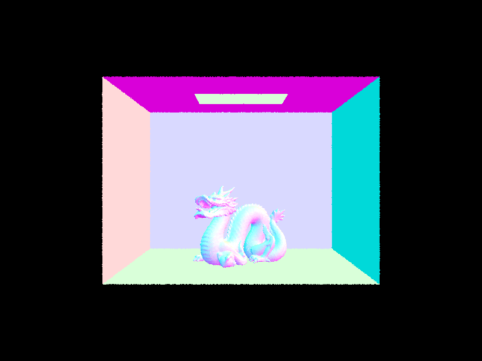
|
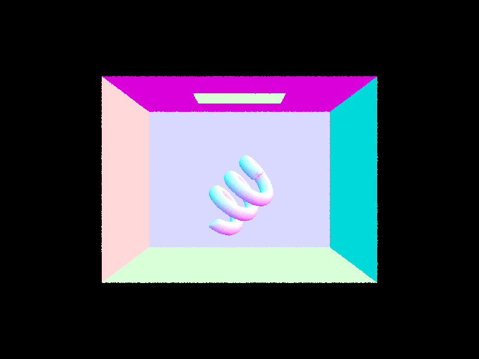
|
Uniform Hemisphere Sampling
This method estimates the direct lighting on a point by sampling uniformly in a hemisphere. Given a ray and an intersection,
we cast rays from the camera and check whether it intersects something. If it does hit, we calculate the amount of light that
is reflected back by estimating how much light arrived at that intersection point from elsewhere. This estimation is done by
integrating over all the light arriving in a hemisphere and can be approximated using a Monte Carlo estimator.
Importance/Light Sampling
Instead of sampling uniformly, we want to sample the lights directly. In uniform hemisphere sampling,
if a ray intersects with something we calculate the amount of light. However, in importance sampling, if the ray does NOT hit something,
we know that the light source does cast light onto the hit point since there is no object blocking the light. At this point, we can use
the same reflectance equation as in uniform hemisphere sampling to calculate the amount of outgoing light.
| Uniform Hemisphere Sampling | Light Sampling |
|---|---|
|
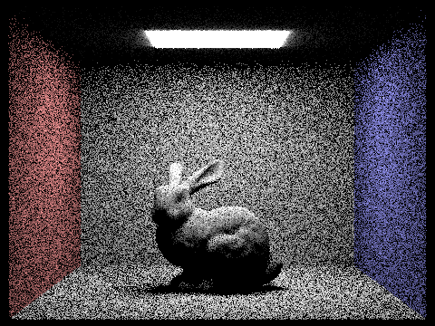
|
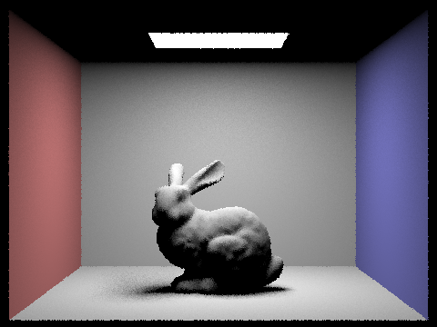
|
|
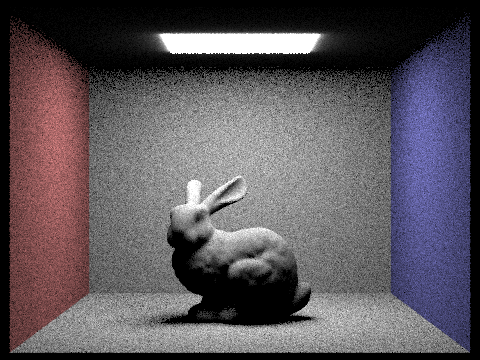
|
|
|
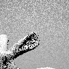
|
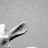
|
|
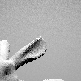
|
|
As we increase the number of samples per light in importance sampling, we see reduced noise in soft shadows. More light rays will increase the chance for a certain pixel to be considered as lit.
As you can see in the pictures above, the results of hemisphere sampling are more grainy than the images produced using lighting sampling. This is because if we shoot rays uniformly in a hemisphere, most directions have an incoming radiance of zero, especially considering there is only one light source in this scene. This is why a lot of pixels in the images generated with uniform hemisphere sampling are just black and thus give off a more grainy look. In importance/lighting sampling, we integrate only over the area of light which allows us to narrow our focus onto directions where incoming radiance could be non-zero.
Direct lighting only accounts for one bounce of light. By including more bounces, we create more realistic images that simulate what light
does in real life.
We've already implemented direct-lighting with zero-bounce and one-bounce from earlier. Now to have more bounces, we implemented a recursive method
named at_least_one_bounce_radiance. The base case uses Russian Roulette to randomly terminate sampling. We first set L_out to the result of the first bounce.
To continue recursively, we must satisfy a few conditions:
|
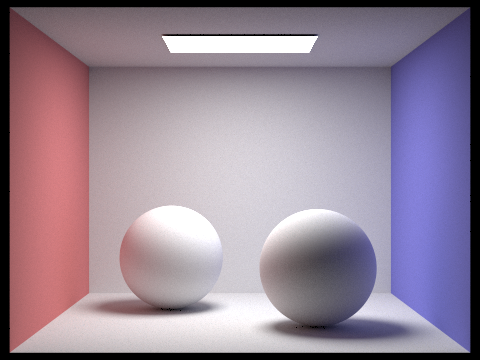
|

|
|
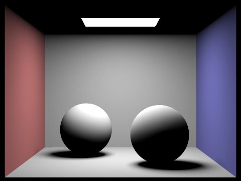
|
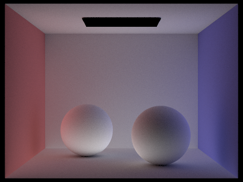
|
As seen from the images above, indirect illumination can add a lot more detail to an image. The surface of the spheres will have a tint of red/blue depending on which wall it's closer to.
|
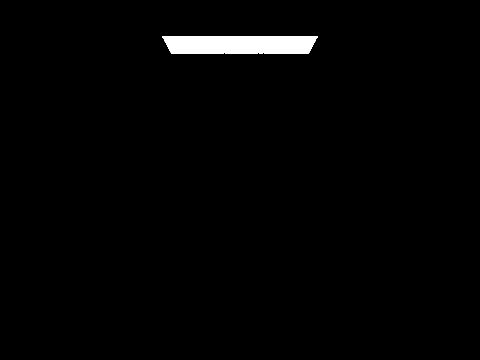
|
|
|
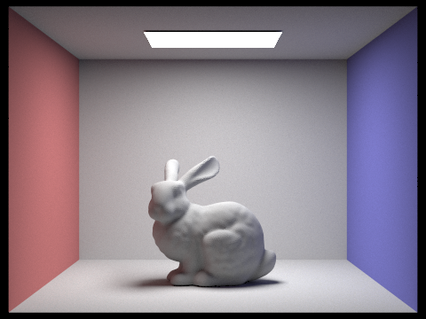
|
|
|
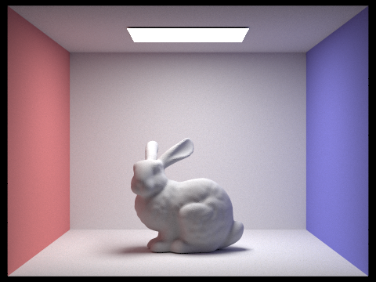
|
At max_ray_depth 0 we only have a zero bounce, meaning only the light source itself is lit. At max_ray_depth 1 the ceiling around the light source is not lit. This is because we are not yet calculating the bounce(s) of light from other areas of the scene. With one more depth the ceiling becomes lit, but as we increase the max_ray_depth further we will see minimal changes.
|
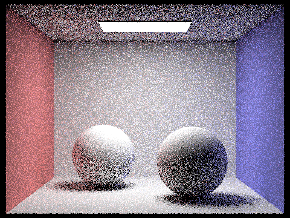
|
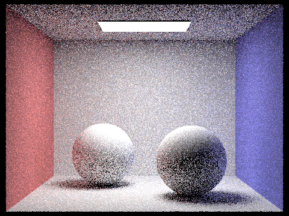
|
|
|
|
|
|
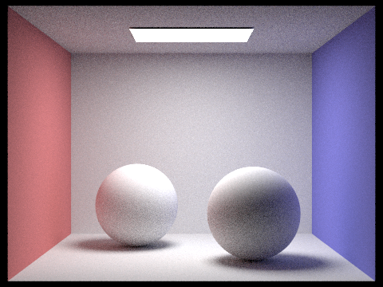
|
|
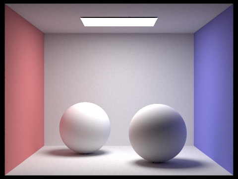
|
As we've seen many times before, more sampling leads to less noise.
Adaptive sampling is a way to optimize our rendering. We can change our sample rate to based on how many we need at a certain pixel.
For pixels that converge quickly, we can take fewer samples. Similarly, we can use more samples for pixels that require many samples to reduce noise.
We implemented the ray_pixel which takes in the pixel we are raytracing for as an x and y value. For each pixel, we sample ns_aa times.
For every 32 pixels, we check if the pixel converged. We do this by the following:
We define the variable I to measure a pixel's convergence.
I = 1.96 * σ / sqrt(n)
Where the mean and standard deviation are:
σ^2 = (1 / (n - 1)) * (s2 - (s1^2 / n))
μ = s1 / n
s1 = (k=1, n)∑ xk
s2 = (k=1, n)∑ (x^2)k
I <= maxTolerance * μ
If the above condition is satisfied, we consider the pixel as converged and stop tracing more rays for this pixel.
|
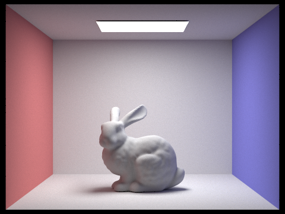
|
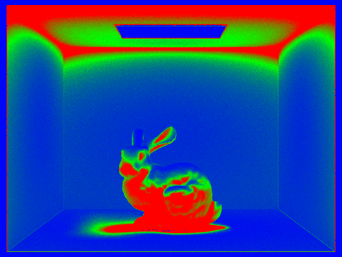
|

|
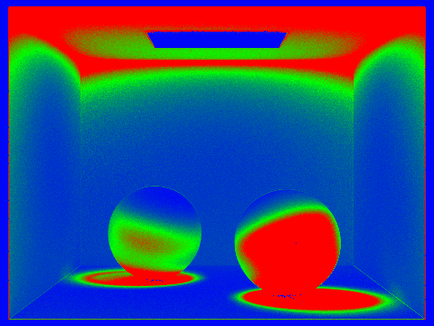
|
Red represents high-sampling rates and blue represents low-sampling rates.
Our way of collaboration usually involved one of us coding while the other serves as a viewer. The viewer is able to act as second perspective to catch small mistakes and provide additional insight on what/how we should implement something. This usually took place over zoom. We learned that this strategy is often more efficient/fun than each of us working alone.